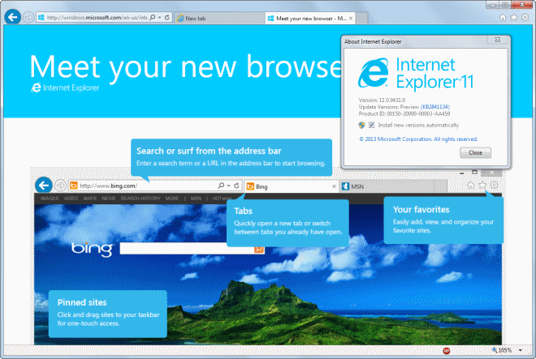
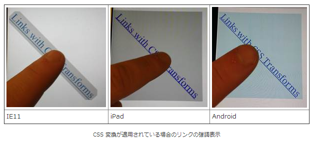
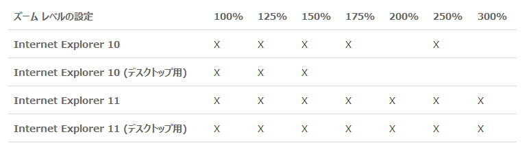

Windows 7 の Internet Explorer 11 と Windows 8.1 の Internet Explorer 11 の違い
公開日：

米Microsoft Corporationは7日（現地時間）、Windows 7向けの「Internet Explorer 11」を正式公開した。現在、日本語版を含む95カ国語版が同社のWebサイトから無償でダウンロード可能。また、“Windows Update”を通じた自動更新も本日より開始される。自動更新の配信はRelease Preview版「Internet Explorer 11」のユーザーから順に行われ、一般ユーザーにも数週間以内に届けられる見込み。
Windows 7 の Internet Explorer 11 は、Windows 8.1 のデスクトップ向け Internet Explorer 11 とほぼ同等の機能をもつのだけれど、完全に同じというわけではない。
Windows 8.1のユーザが使っているのと基本的に同じブラウザであり、唯一の違いはGoogleのSPDYプロトコルをサポートしていないこと。それ以外では、8.1用と同じスピードの向上、セキュリティとプライバシーのアップデート、WebGLのサポート、インタフェイスのアップデートなどが盛り込まれている。
Internet Explorer 11がWindows 7にもやってきた: セキュリティでChrome等に大差! | TechCrunch Japan
この記述はだいぶ怪しくて、SPDY をサポートしていないのは正しいのだけど、それだけが唯一の違いというわけではない。
細かい内容については、以下のページが詳しい。
Windows 8.1 での Internet Explorer 11 と Windows 7 での Internet Explorer 11 との間には、HTML5 ビデオ、タッチ サポート、デバイスと画面の向きに関する API、Windows の統合、パフォーマンスの面でいくつかの違いがあります。
順にみていこう。
HTML5 ビデオ
Windows 7 の Internet Explorer 11 では、Encrypted Media Extensions (EME) と Media Source Extensions (MSE) がサポートされない。
Encrypted Media Extensions (EME)
EME は video 要素と audio 要素を拡張し、プラグインを使うことなく、デジタル著作権管理 (DRM) で保護されたコンテンツを有効にします。 EME は、Windows 8.1 の Internet Explorer 11 および JavaScript を使っている Windows ストア アプリでサポートされます。
ビデオ (Windows)Media Source Extensions (MSE)
Internet Explorer 11 では、HTML5 の Media Source Extensions (MSE) を使った MPEG-DASH メディア ストリーミングのサポートが導入されています。MSE は、プラグインを使わずにメディア ストリームを動的に変更できる video 要素や audio 要素を拡張します。これにより、アダプティブ メディア ストリーミング、ライブ ストリーミング、ビデオのスプライス、ビデオ編集などの処理ができるようになります。
EME は HTML5 ビデオでお金儲けをしようと思えば必須の機能になるんだろうね。MSE は回線品質に合わせて JavaScript で動的にビットレートを調整したりできるようにするものみたい。
ただ、名前に“Extensions”とあるように、ブラウザー側はインターフェイスだけを用意して、実際の処理は外部モジュールに丸投げする形式になっているようで、断片化を懸念する声もあるみたい。いろんな形式が乱立しちゃって、結局使い勝手が悪いみたいなことにならなければいいけど。
Windows 8.1 統合
Windows 7 の Internet Explorer 11 は Windows 8.x で追加された機能にアクセスできない。
たとえばリモート端末のタブアクセスや、強化されたライブタイルなんかがそれ。サイトのピン止めでライブタイルにできるのは、自分のサイトでも今度試してみたいな。
電話番号の認識は、Skype との連携なんかに使われている。
いまどきのタブレット対応
Windows 7 と Windows 8.x の違いとして、タブレット対応が挙げられる。もちろん、Windows 8.1 でしかサポートされていない機能は、Windows 7 の Internet Explorer 11 には搭載されていない。
タッチ サポート

タッチサポートといっても単に触れるってだけじゃなくて、タッチならではの問題に取り組んだり、マウスオペレーションでしかアクセスできない機能を潰したりと、なかなか難しいっぽい。
タブレット使うなら Windows 8.1 ってことやな。
デバイスと画面の向きに関する API
高 DPI サポート

Windows 8 では高 DPI 環境のサポートが充実しているが、Windows 7 にはこれがない。タブレット使いじゃなくても、Retina ディスプレイなんかを使う人は、Windows 8.1 にしたほうがいいのかもしれない。
そのほか
拡張保護モードはサポートされない。
あと、最新の更新プログラムが適用されていないと、一部の「F12 開発者ツール」がサポートされない。
途中でめんどくさくなったので、単なるリンク集みたいになった。とりあえず、いろいろ違うんだよってことで。